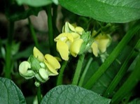

あずき（小豆）の生産量 都道府県ランキング
1位から3位までと、とれた量
あずきが日本でいちばん多くとれるのは北海道です。4万3,900 tで、全国（4万5,100 t）の97%を占めます。

| 順位 | 都道府県 | 収穫量 | 全国に占める割合 |
|---|---|---|---|
| 1位 | 北海道 | 4万3,900 t | 97% |
| 2位 | 京都府 | 107 t | 0.2% |
| 3位 | 滋賀県 | 18 t | 0.0% |
この数字について
- 分類：マメ科
- 全国の収穫量：4万5,100 t
- この数字が表すもの：収穫量（畑や田でとれた重さ）
- 調査：作物統計調査 作況調査（麦・豆・工芸農作物ほか） 令和7年産
- 3県分を調査（調査していない県は順位に入りません）
あずきの生産量について、よくある質問
- あずきの生産量が日本一の都道府県はどこですか？
- 北海道です。作物統計調査 作況調査（麦・豆・工芸農作物ほか）（令和7年産）で4万3,900 tでした。
- あずきの生産量ランキング2位・3位はどこですか？
- 2位は京都府（107 t）、3位は滋賀県（18 t）です。
- あずきの全国の生産量はどれくらいですか？
- 4万5,100 t（令和7年産）です。